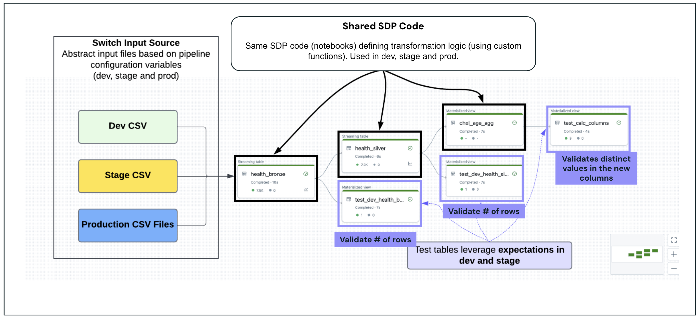

Section 5 · Implementing CI-CD · Quelle: Kurs 4, Module M02 CI, Kapitel 12–13
Unit-Tests (Kapitel 07-3) prüfen einzelne Funktionen isoliert – sie sagen jedoch nichts darüber aus, ob eine komplette Pipeline aus Ingestion, Transformation und Speicherung im Zusammenspiel korrekt funktioniert. Genau hier setzen Integrationstests an: Sie validieren den Datenfluss über mehrere Komponenten hinweg und prüfen auf Probleme wie Dateninkonsistenzen, Format-Mismatches oder Verarbeitungsfehler, die erst beim Zusammenspiel der Komponenten sichtbar werden. Dieses Kapitel stellt zwei gängige Ansätze für Integrationstests auf Databricks vor: Expectations in Spark Declarative Pipelines und separate Notebook-Tasks in Lakeflow Jobs.
In Databricks lassen sich Integrationstests auf zwei unkomplizierte Arten umsetzen:
Bei Methode 2 sieht ein typischer Gesamt-Job so aus: Zunächst laufen die Unit-Tests, die einzelne Funktionen isoliert prüfen – schlägt einer davon fehl, bricht der Job sofort ab. Anschließend wird die SDP zur Dateningestion ausgeführt (ohne Expectations). Danach folgen die eigentlichen Integrationstests als separate Notebook-Tasks, parametrisiert für die jeweilige Zielumgebung (dev, stage oder production) – typische Prüfungen sind Zeilenzahlen, erfolgreiche Tabellenerstellung, erwartete Spalten oder Werte, Wertebereichsprüfungen und Duplikat-Erkennung. Erst wenn Unit-Tests, Datenpipeline und Integrationstests erfolgreich durchgelaufen sind, wird abschließend die finale Visualisierung erzeugt.
Ein Nachteil von Methode 2: Sie erfordert deutlich mehr Code für Setup und Validierung sowie eine manuelle Verwaltung der Job-Parameter, um den Code dynamisch an die jeweilige Zielumgebung anzupassen.

Das Kursprojekt nutzt Methode 1. Die eigentliche ETL-Logik liegt in einer Spark Declarative Pipeline (Datei src/sdp/ingest-bronze-silver_sdp.py), die je nach Konfigurationsvariable target Daten aus dem passenden Katalog (dev/stage/prod) einliest:
from pyspark import pipelines as dp
import pyspark.sql.functions as F
import sys
sys.path.append('../.')
from helpers import project_functions
# Zielumgebung und Rohdatenpfad werden dynamisch aus der Pipeline-Konfiguration gelesen
target = spark.conf.get("target")
raw_data_path = spark.conf.get("raw_data_path")
valid_rows = {{
"not_null_pii": "PII IS NOT NULL",
"valid_date": "date IS NOT NULL"
}}
@dp.table(
comment = "This table will be used to ingest the raw CSV files and add metadata columns to the bronze table.",
table_properties = {{"quality": "bronze"}}
)
@dp.expect_all_or_fail(valid_rows)
def health_bronze():
return (
spark
.readStream
.format("cloudFiles")
.option("cloudFiles.format", "csv")
.option("header", "true")
.schema(project_functions.get_health_csv_schema())
.load(raw_data_path)
.select(
"*",
"_metadata.file_name",
"_metadata.file_modification_time",
F.current_timestamp().alias("processing_time")
)
)
Die Datei tests/integration_test/integration_tests_sdp.py ergänzt dieselbe Pipeline um zusätzliche, ausschließlich zu Testzwecken erzeugte Tabellen. Der folgende Code ist unverändert aus dieser Datei übernommen und zeigt beide zentralen Bausteine: eine dynamische, umgebungsabhängige Erwartungs-Konfiguration sowie eine parametrisierte Testfunktion:
from pyspark import pipelines as dp
target = spark.conf.get("target")
## Erwartete Zeilenzahlen je Zielumgebung und Tabelle
target_integration_tests_validation = {{
'development': {{
'health_bronze': {{'total_rows': 7500}},
'health_silver': {{'total_rows': 7500}}
}},
'stage': {{
'health_bronze': {{'total_rows': 35000}},
'health_silver': {{'total_rows': 35000}}
}}
}}
if target in ('development', 'stage'):
total_expected_bronze = target_integration_tests_validation[target]['health_bronze']['total_rows']
total_expected_silver = target_integration_tests_validation[target]['health_silver']['total_rows']
def test_count_table_total_rows(table_name, total_count, target):
'''
Count the number of rows in the specified table and compare with the expected
values for development and stage data. Fail the update if the count does not match.
'''
@dp.table(
name=f"TEST_{{target}}_{{table_name}}_total_rows_verification",
comment=f"Confirms all rows were ingested from the {{target}} raw data to {{table_name}}"
)
@dp.expect_all_or_fail({{"valid count": f"total_rows = {{total_count}}"}})
def count_table_total_rows():
return spark.sql(f"""
SELECT COUNT(*) AS total_rows FROM {{table_name}}
""")
def test_gold_table_columns():
'''
Checks unique values in the columns Age_Group and HighCholest_Group
in the gold table chol_age_agg.
'''
check_silver_calc_columns = {{
"valid age group": "Age_Group in (\'0-9\', \'10-19\', \'20-29\', \'30-39\', \'40-49\', \'50+\', \'Unknown\')",
"valid cholest group": "HighCholest_Group in (\'Normal\', \'Above Average\', \'High\', \'Unknown\')"
}}
@dp.table(comment="Check age group and high cholest group in the gold table")
@dp.expect_all_or_fail(check_silver_calc_columns)
def test_calculated_columns_age_cholesterol():
return (dp
.read("chol_age_agg")
.select("Age_Group", "HighCholest_Group")
)
## Tests abhaengig von der Zielumgebung ausfuehren
if target in ('development', 'stage'):
test_count_table_total_rows('health_bronze', total_expected_bronze, target)
test_count_table_total_rows('health_silver', total_expected_silver, target)
test_gold_table_columns()
elif target == 'production':
## In Produktion werden nur die Werte der Gold-Tabelle geprueft, nicht die Zeilenzahl
test_gold_table_columns()
Bemerkenswert an diesem Muster: Für development und stage wird die volle Prüfung inklusive konkreter Zeilenzahlen durchgeführt, da hier mit bekannten, statischen Testdatensätzen gearbeitet wird. In production hingegen sind die tatsächlichen Zeilenzahlen naturgemäß nicht im Voraus bekannt (die Daten wachsen kontinuierlich) – deshalb wird dort ausschließlich die Gold-Tabelle mit inhaltlichen Konsistenzprüfungen (z. B. gültige Kategoriewerte) validiert, nicht aber die absolute Zeilenzahl. Diese Fallunterscheidung nach target ist ein zentrales Muster für portable, wiederverwendbare Expectations, die in allen drei Umgebungen funktionieren.
tests-Ordners organisieren.expect), den Datensatz verwerfen (expect_or_drop) oder das gesamte Update fehlschlagen lassen (expect_or_fail bzw. expect_all_or_fail für mehrere Bedingungen gleichzeitig). Databricks empfiehlt ausdrücklich, für Pipeline-Tests eigene Entwicklungs- und Test-Datasets mit sowohl erwarteten als auch bewusst fehlerhaften/korrupten Datensätzen anzulegen – genau das Muster, das im Kursprojekt mit den separaten development/stage-Testtabellen umgesetzt wird.